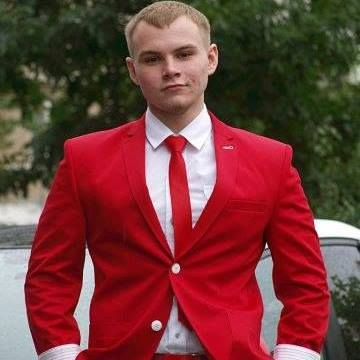

- 
Briekhov K.
GRAPHIC & WEB DESIGNER
Hi, my name is Kyrylo Briekhov, I’m a Junior Web Developer open for business, Ukraine-based freelancer. I’ve worked with wide variety of projects and looking for more to work with. I’m working remotely on projects for clients all over the world. I’m excited to create the website you desire meeting all requirements you need. I have a diverse set of skills, ranging from design, to HTML + CSS +Javascript, all the way to PHP, Python and UX design.